~ Path to the Earthend ~
DownloadD-???
Some NPCs from Patapon game is now Generals. Generals are leader of Patapon class army, and sends holy drum commands to Patapons. They use not only special ability, but also can use called General Mode. But if everyone goes to the battlefields, who keeps Patapolis? Find out in the game!
Once you defeat the boss, you can get mysterious item, called Summon orb. With the orb, you can summon the boss to help Patapons. Each boss moves on attack command, and some bosses can even change the weather! Level-up boss field to get stronger boss.
* The boss summon works differently from the image.Almost perfect hits are now different from bad hits. With perfect hits, you'll get maximum damage, and with all bad hits, you'll get minimum damage. Perfection rate works also for defending, dodging, and even marching for some fields. Check combo worm to see how the perfect hit was.